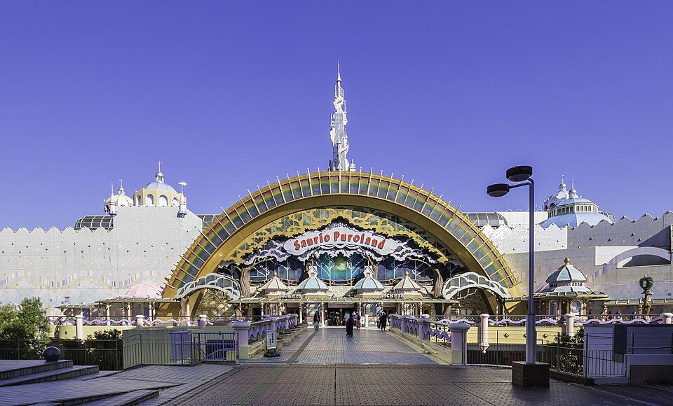
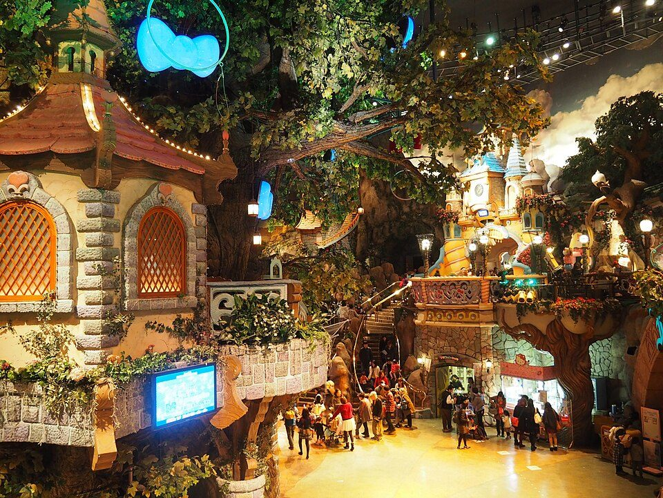
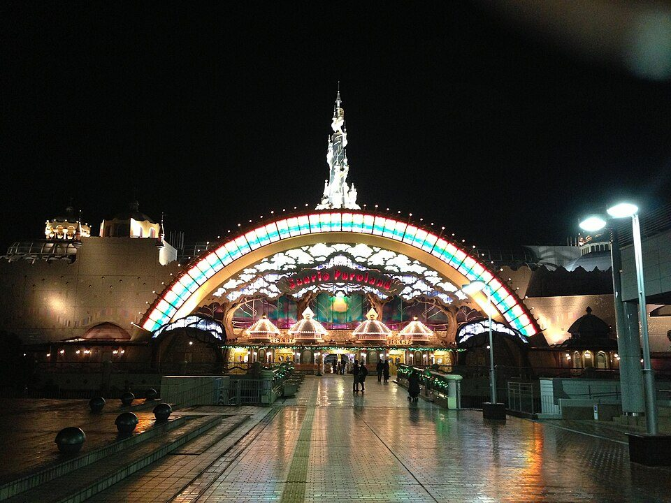
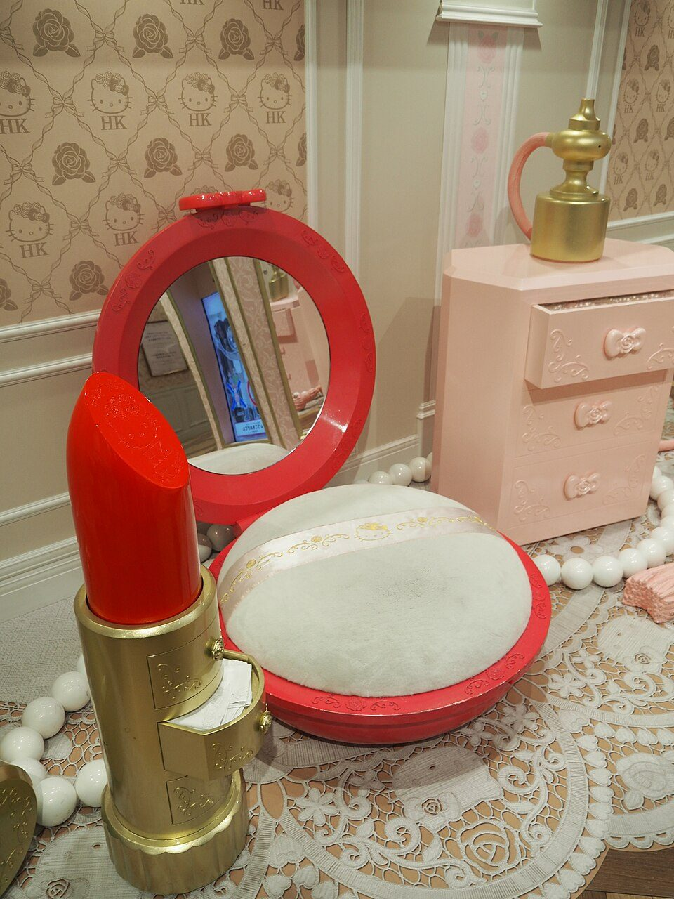
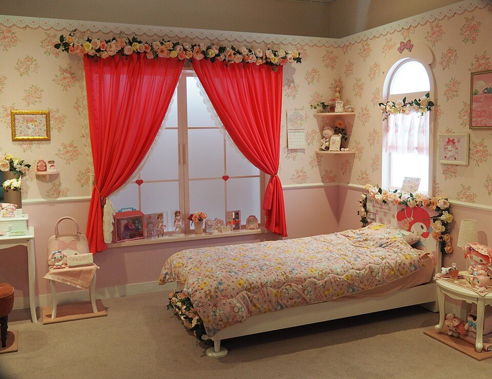
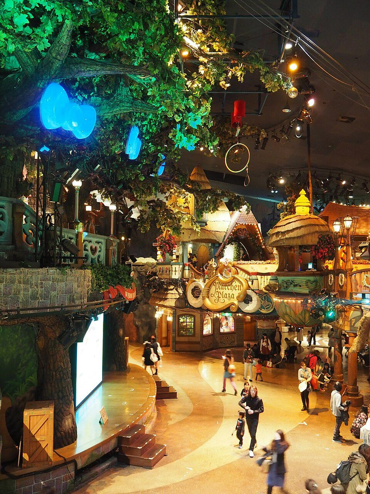

Sanrio Puroland

.jpg){kind=link}
Before you go
Address: 1-31 Ochiai, Tama City, Tokyo 206-8588. Entrance on 3F. Guest Center 042-339-1111 (Japanese only, 9:30–17:00 on open days).
Read on the official calendar 15 Nov 2026: Fri 25 and Sat 26 Dec 8:30 to 18:00. Closed days in December: 3, 9 and 10 only. Hours may change.
About 1 h 30 door to door from the hotel: about an hour of trains from Tokyo Station, with one change at Shinjuku (estimate).
Everyone needs a visit reservation as well as a ticket; without it entry is refused. The official e-ticket includes the reservation, and booking for 25 and 26 Dec is already open. Not confirmed yet: whether the free twins also need a reservation, and whether Roy can register for Sanrio+ from Malaysia.
Sanrio PurolandTheme parkIndoor Sanrio outing; saved ticket, age-band and family-price notes below. Current travel-date operation unverified.MapDetails
Official puroland.jp calendar data and guide pages read 15 Nov 2026. Train times from Yahoo Japan transit and Jorudan, estimates only. Not confirmed: whether the under-3 twins need their own reservation; whether overseas visitors can join Sanrio+ or use a partner ticket instead; show and Hello Kitty times; shop hours for December; where strollers are parked.
- Fri 25 Dec Day Passport, counter price: adult 18 to 64 JPY 5,600 (≈ SGD 45.36 · ≈ MYR 143.92); senior 65+ or child 3 to 17 JPY 4,500 (≈ SGD 36.45 · ≈ MYR 115.65).
- Sat 26 Dec Day Passport, counter price: adult JPY 5,900 (≈ SGD 47.79 · ≈ MYR 151.63); senior or child JPY 4,800 (≈ SGD 38.88 · ≈ MYR 123.36).
- Whole family, counter price, for 3 adults and 2 seniors (65 and over), twins free: JPY 25,800 (≈ SGD 208.98 · ≈ MYR 663.06) on Fri 25 Dec or JPY 27,300 (≈ SGD 221.13 · ≈ MYR 701.61) on Sat 26 Dec. A grandparent under 65 pays the adult price.
- The official e-passport includes the visit reservation, costs JPY 100 (≈ SGD 0.81 · ≈ MYR 2.57) less than the counter and can be cancelled until 23:59 the day before if paid by card (not at a convenience store).
- Lunch inside: Yakata buffet (4F, 70 min) adult JPY 3,800 (≈ SGD 30.78 · ≈ MYR 97.66); children's low-allergen curry JPY 950 (≈ SGD 7.70 · ≈ MYR 24.42). No restaurant takes reservations.
- Photo with Hello Kitty at Lady Kitty House, optional: JPY 1,600 (≈ SGD 12.96 · ≈ MYR 41.12).
- Train fare about JPY 609 (≈ SGD 4.93 · ≈ MYR 15.65) per adult each way (estimate).
With the childrenOn these days strollers are not allowed on floors 1 and 2, where Lady Kitty House, the boat ride, the parade and the Baby Center are. Park both strollers; lifts only; no baby-carrier loan.
Indoor four-storey Sanrio theme park: Hello Kitty photo room (Lady Kitty House), boat ride, parade and the park's biggest shop.
One Hello Kitty park is on our route: Sanrio Puroland, in Tama, west of Tokyo. Along the way there are Sanrio shops in Singapore, Osaka, Nagoya, the Mt Fuji area and Tokyo. Opening hours were read on the official pages on 15 and 16 Nov 2026; anything not confirmed says so. Nothing is booked, and no Sanrio shop has posted year-end hours yet.
Tama Center, west Tokyo: 5 minutes on foot from Tama Center Station (Keio, Odakyu, monorail). The entrance is on 3F.
Age 2 and under enter free; a ticket is needed from age 3 (official page). The twins are under 3, so they should be free: bring their passports in case staff ask.
About 35 months at the stay, so under 3. Free if still 2 on the day: check the birthdays against the visit date.
Strollers are not allowed on floors 1 and 2 on these days (Hello Kitty's house, the boat ride, the parade and the Baby Center are there). Park them: the twins walk or are carried.
Fri 25 Dec: last day of the park's Christmas event and JPY 1,500 (≈ SGD 12.15 · ≈ MYR 38.55) cheaper for the family, but it takes over Christmas Day: no Christmas lunch, an early breakfast, and dinner not before about 19:00. Sat 26 Dec: the Christmas event is over, it is a weekend, and the planned Saturday dinner should start no earlier than 18:30 near the hotel (leaving Puroland about 16:45 gets us back about 18:15; Saturday trains not checked). Disneyland on Sun 27 Dec is dropped, so Fri 25 would follow straight after the DisneySea day, while Sat 26 leaves a day between. Sun 27 Dec is being left empty, but Puroland is open that day too and it is the dearest day (adult JPY 6,300 (≈ SGD 51.03 · ≈ MYR 161.91) against JPY 5,600 (≈ SGD 45.36 · ≈ MYR 143.92) on Fri 25 and JPY 5,900 (≈ SGD 47.79 · ≈ MYR 151.63) on Sat 26). Decide before the Christmas meals are booked, about Mon 30 Nov.
More photos

.jpg){kind=link}



.jpg){kind=link}

.jpg){kind=link}

.jpg){kind=link}
Notes and sources
Sanrio Puroland (Tama, Tokyo): hours, prices and the day choice are in the Hello Kitty section below. Open 08:30 to 18:00 on Fri 25, Sat 26 and Sun 27 Dec; the Christmas events end on 25 Dec. Adult JPY 5,600 (≈ SGD 45.36 · ≈ MYR 143.92) on Fri 25, JPY 5,900 (≈ SGD 47.79 · ≈ MYR 151.63) on Sat 26 and JPY 6,300 (≈ SGD 51.03 · ≈ MYR 161.91) on Sun 27 Dec.
with tickets, trains and a buffet lunch (estimate).
Age rule
Tickets and costs
JPY 50,000–55,000
A whole day for the family costs roughly
Tickets, children and what is not confirmed
Booking
(≈ SGD 405.00–445.50 · ≈ MYR 1,285.00–1,413.50)
From the hotel
Which day
Not booked · reservation needed
Where
Good to know
サンリオピューロランド